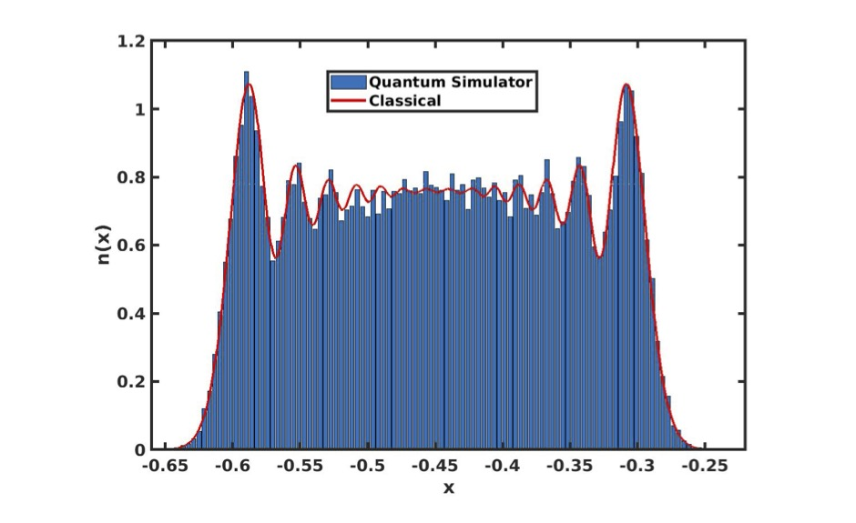
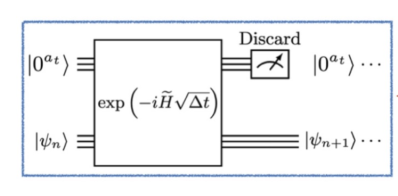
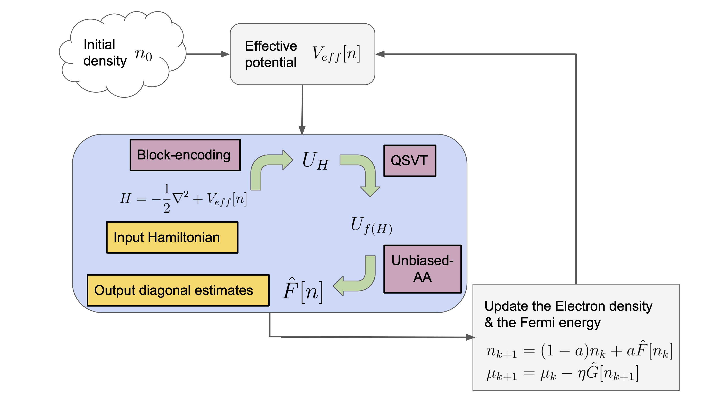
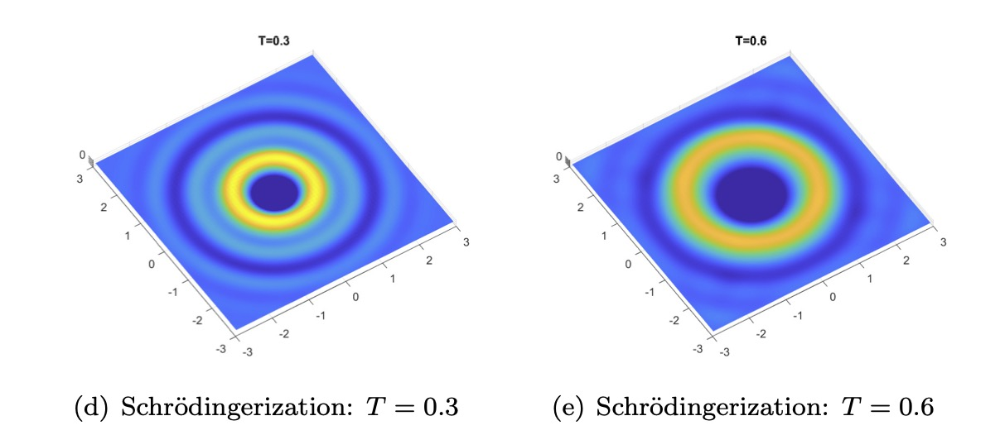
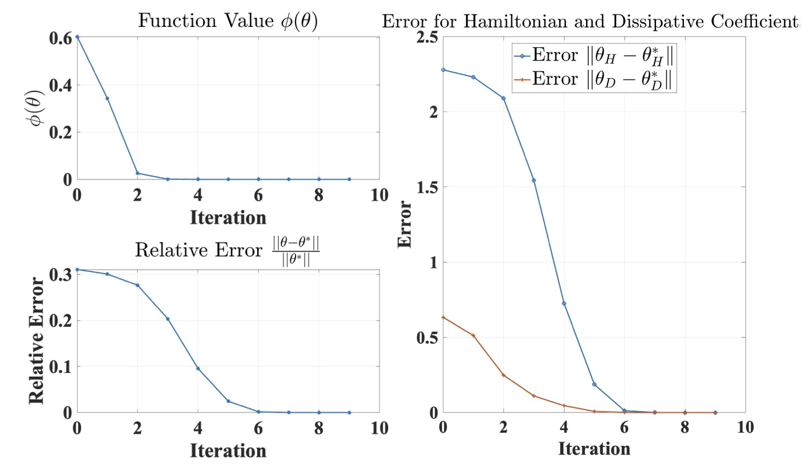
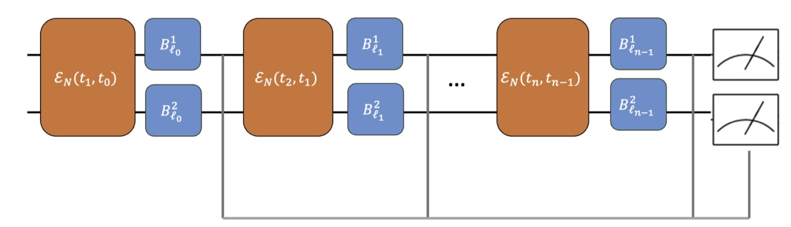
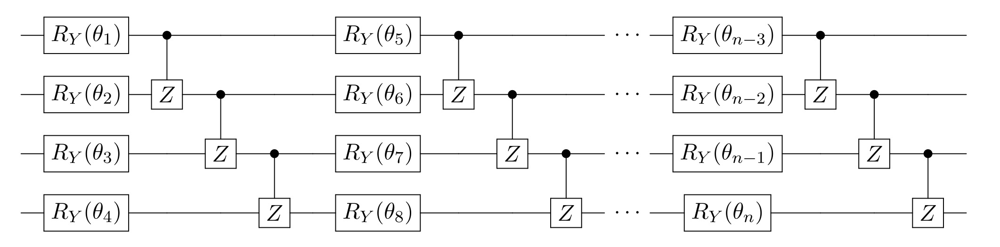
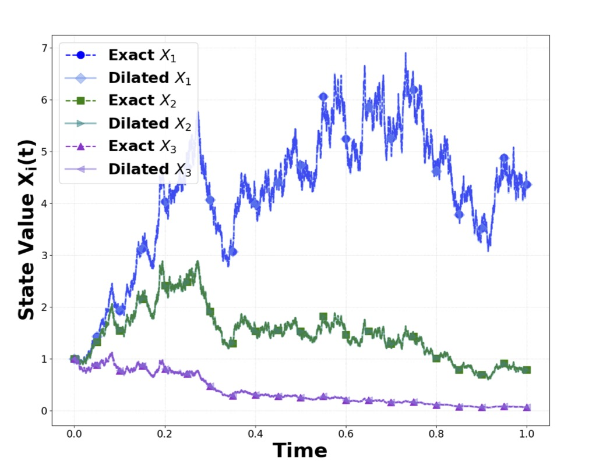

Bridging Rigorous Applied Mathematics with Near-Term Quantum Hardware
Xiantao Li's Group • Department of Mathematics • Penn State University
While quantum computers offer unprecedented potential, translating realistic scientific models—which are inherently driven by dissipation, noise, and stochasticity—into the strict unitary constraints of quantum hardware remains a profound mathematical bottleneck.
Our group builds the mathematical bridge across this gap. Grounded in continuous-time analysis, numerical PDEs, and stochastic dynamics, we design rigorous, scalable quantum algorithms that natively handle non-Hermitian and open quantum systems. By developing optimal dilation frameworks and hardware-algorithm co-design strategies, our overarching objective is to deliver the next generation of computational tools for materials science, chemistry, and fluid dynamics.
Developing universal frameworks beyond the Markovian regime, mapping complex stochastic trajectories into executable quantum circuits.
Utilizing optimal dilation methods and mid-circuit measurements to seamlessly embed deterministic and stochastic dynamics into unitary spaces.
Creating robust error extrapolation and mitigation strategies that simultaneously suppress algorithmic bias and physical circuit errors.
Engineering mathematically rigorous and quantum-efficient solvers for large-scale PDEs.

Developing highly efficient, mathematically rigorous quantum circuits for unitary evolution U = e-iHt. By establishing strict error bounds and optimizing resource estimates, we provide the foundational algorithmic infrastructure for exact ground-state and dynamical simulations in physical chemistry and materials science.

Real-world materials and near-term hardware are inherently dissipative. We build rigorous mathematical frameworks to simulate complex Lindbladian and non-Markovian dynamics, unlocking practical quantum utility for open systems by bridging theoretical continuous-time models with NISQ hardware reality.

Transitioning quantum advantage into first-principle materials design. Our quantum-enhanced Density Functional Theory (DFT) solvers are engineered to overcome classical scaling bottlenecks, enabling high-fidelity electronic structure predictions for complex, strongly correlated materials.

Translating classical fluid and wave dynamics onto quantum architectures. Utilizing breakthrough dilation frameworks and Schrödingerisation, we engineer mathematically well-posed quantum solvers designed to break the curse of dimensionality in macroscopic physics simulations.

Transforming measurement data into actionable hardware calibration. We develop robust learning algorithms to infer Hamiltonian interactions and dissipative environmental parameters, directly enabling advanced control protocols for noisy quantum devices.
Overcoming classical optimization and sampling limits. By leveraging quantum walks and amplitude amplification, our quantum MCMC algorithms drastically reduce mixing times, providing a strategic computational advantage in traversing complex, non-convex optimization landscapes.

Treating hardware noise as a solvable mathematical parameter. We pioneer rigorous error extrapolation (ZNE) and non-Markovian mitigation strategies that natively exploit hardware topologies to simultaneously suppress algorithmic bias and physical circuit errors.

Optimizing the classical-quantum interface. We design and rigorously analyze hybrid optimization schemes—such as random coordinate descent and fast-forwarded Hamiltonian diagonalization—ensuring stable, scalable convergence for variational quantum algorithms.

Natively embedding randomness into quantum processors. Our unitary dilation frameworks rigorously propagate second-order statistics, unlocking the ability to simulate complex diffusive dynamics, open system limits, and stochastic transport phenomena directly on quantum hardware.
Professor, Penn State
Graduate Student
Graduate Student
Graduate Student
Graduate Student
Undergraduate Student
Undergraduate Student
Undergraduate Student